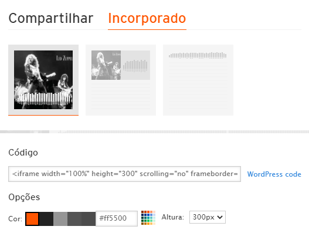
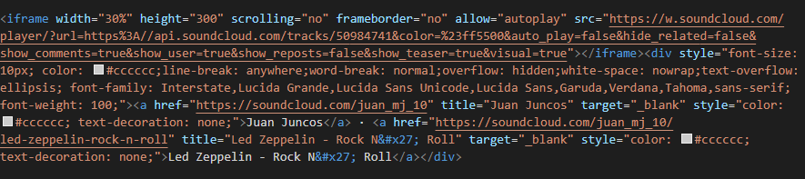
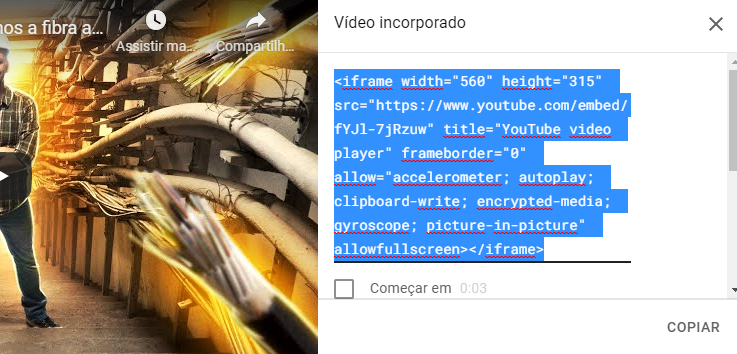
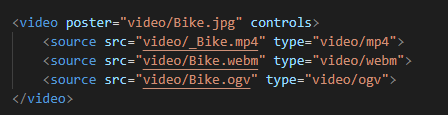
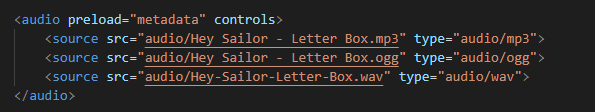
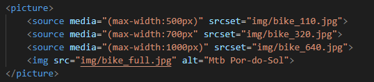

É uma forma de comunicação que combina diferentes formas de conteúdo, como texto,áudio,imagens,animações ou vídeo em uma apresentação.
A Tag < iframe > é usada para incorporar outro documento ao documento HTML. A sua sintaxe consiste:
< iframe src="URL" height="altura em pixels" width="largura em pixels" title="título" > < /iframe >
Para a incorporação de um site dentro de outro site usamos a tag Iframe. Após localizar o endereço desejado,conforme o exemplo abaixo, aplicamos na tag e também decidimos os seus ajustes, como altura e largura.
Para embutir um audio de forma externa, localizamos em um site, como exemplo SoundCloud, a música que desejamos e copiamos seu código na opção Incorporado. Com esse código, incorporamos na tag Iframe e ajustamos o seu tamanho.


A incorporação de vídeos, ocorre por meio da pesquisa do mesmo, na plataforma Youtube. Selecionando o Compartilhar no vídeo que deseja, incorporamos a Tag Iframe gerada, conforme a imagem a seguir.

Nessa Tag, podemos incorporar vídeos são internos na nossa máquina local. Desde que esses arquivos estejam em uma pasta interna, utilizamos as Tags para incorporação, como na imagem a seguir. Podemos incorporar vários tipos de arquivos de video, para que não haja a possibilidade de incompatilidade na hora da execução.

Podemos também, incorporar aúdio de músicas presentes na nossa máquina local. Através do arquivo em formato disponível em nosso computador, inserimos por meio das tags, vários formatos de aúdio para que não ocorra a inconsistência na hora da execução. A imagem a seguir ilustra a forma de como podemos incorporar os aúdios presentes em uma pasta local.
Existem também, uma biblioteca de audio disponível no Youtube, seguindo os direitos autorais e sites disponíveis para download de audios nesses formatos.

A Tag Picture serve para agrupar várias imagem que serão incorporadas a nossa página. Conforme a imagem a seguir, que mostra a estrutura da Tag, podemos carregar imagens em vários tipos de tamanhos em pixels para que ela se adapte ao navegador. Com essas variações de tamanhos, é possível o redirecionamento das imagens de forma automática.
